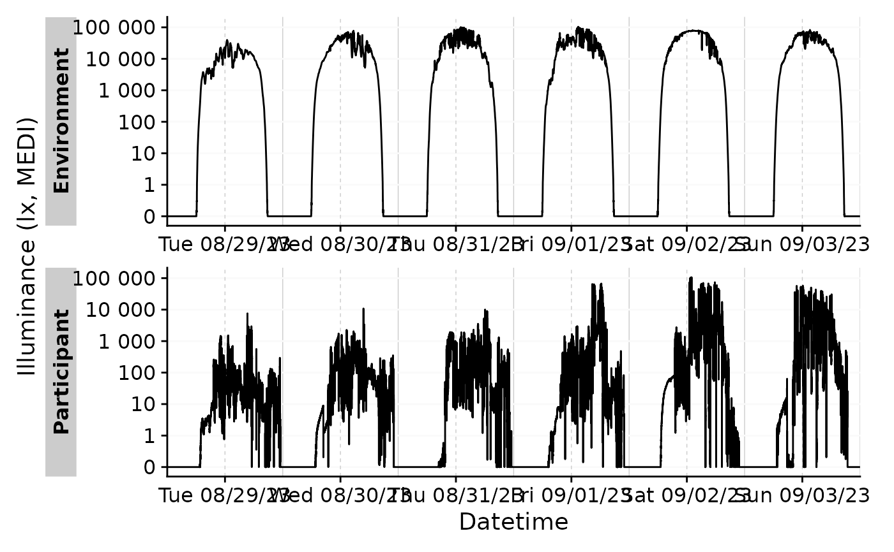
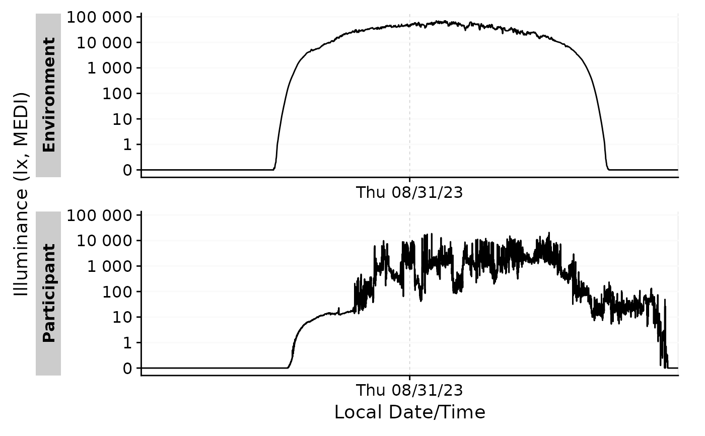
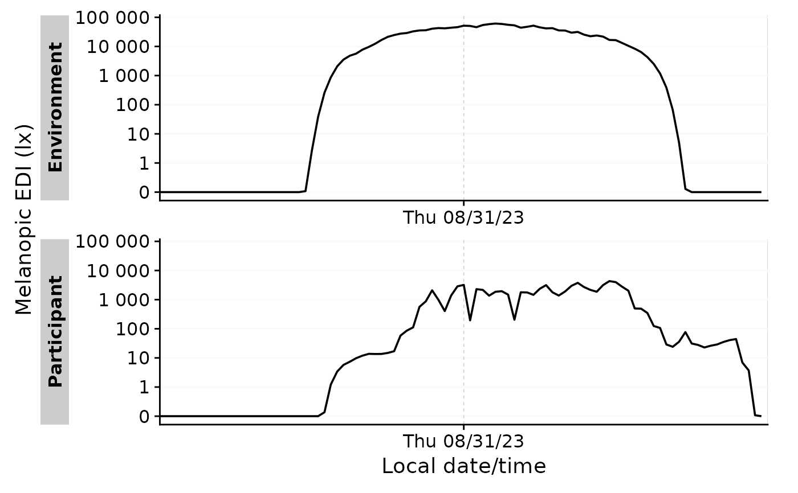
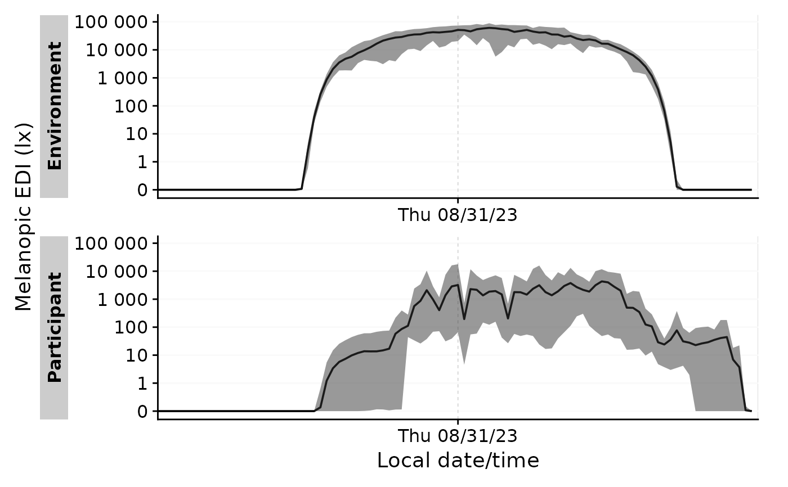

Condenses a dataset by aggregating the data to a single day per group, with
a resolution of choice unit. aggregate_Date() is opinionated in the sense
that it sets default handlers for each data type of numeric, character,
logical, and factor. These can be overwritten by the user. Columns that
do not fall into one of these categories need to be handled individually by
the user (... argument) or will be removed during aggregation. If no unit
is specified the data will simply be aggregated to the most common interval
(dominant.epoch) in every group. aggregate_Date() is especially useful
for summary plots that show an average day.
Usage
aggregate_Date(
dataset,
Datetime.colname = Datetime,
unit = "none",
type = c("round", "floor", "ceiling"),
date.handler = stats::median,
numeric.handler = mean,
character.handler = function(x) names(which.max(table(x, useNA = "ifany"))),
logical.handler = function(x) mean(x) >= 0.5,
factor.handler = function(x) factor(names(which.max(table(x, useNA = "ifany")))),
datetime.handler = stats::median,
duration.handler = function(x) lubridate::duration(mean(x)),
time.handler = function(x) hms::as_hms(mean(x)),
...
)Arguments
- dataset
A light logger dataset. Expects a
dataframe. If not imported by LightLogR, take care to choose a sensible variable for theDatetime.colname.- Datetime.colname
column name that contains the datetime. Defaults to
"Datetime"which is automatically correct for data imported with LightLogR. Expects asymbol. Needs to be part of thedataset. Must be of typePOSIXct.- unit
Unit of binning. See
lubridate::round_date()for examples. The default is"none", which will not aggregate the data at all, but is only recommended for regular data, as the condensation across different days will be performed by time. Another option is"dominant.epoch", which means everything will be aggregated to the most common interval. This is especially useful for slightly irregular data, but can be computationally expensive.- type
One of
"round"(the default),"ceiling"or"floor". Setting chooses the relevant function from lubridate.- date.handler
A function that calculates the aggregated day for each group. By default, this is set to
median.- numeric.handler, character.handler, logical.handler, factor.handler, datetime.handler, duration.handler, time.handler
functions that handle the respective data types. The default handlers calculate the
meanormedianfornumeric,POSIXct,duration, andhms, and themodeforcharacter,factorandlogicaltypes.- ...
arguments given over to
dplyr::summarize()to handle columns that do not fall into one of the categories above.
Value
A tibble with aggregated Datetime data, at maximum one day per
group. If the handler arguments capture all column types, the number of
columns will be the same as in the input dataset.
Details
Summary values for type POSIXct are calculated as the median, because the
mean can be nonsensical at times (e.g., the mean of Day1 18:00 and Day2
18:00, is Day2 6:00, which can be the desired result, but if the focus is on
time, rather then on datetime, it is recommended that values are converted to
times via hms::as_hms() before applying the function (the mean of 18:00 and
18:00 is still 18:00, not 6:00). Using the median as a default handler
ensures a more sensible datetime.
aggregate_Date() splits the Datetime column into a Date.data
and a Time column. It will create subgroups for each Time
present in a group and aggregate each group into a single day, then remove
the sub grouping.
Use the ... to create summary statistics for each group, e.g. maximum or
minimum values for each time point group.
Performing aggregate_Datetime() with any unit and then
aggregate_Date() with a unit of "none" is equivalent to just using
aggregate_Date() with that unit directly (provided the other arguments
are set the same between the functions). Disentangling the two functions
can be useful to split the computational cost for very small instances of
unit in large datasets. It can also be useful to apply different handlers
when aggregating data to the desired unit of time, before further
aggregation to a single day, as these handlers as well as ... are used
twice if the unit is not set to "none".
Examples
library(ggplot2)
#gg_days without aggregation
sample.data.environment %>%
gg_days()

#with daily aggregation
sample.data.environment %>%
aggregate_Date() %>%
gg_days()

#with daily aggregation and a different time aggregation
sample.data.environment %>%
aggregate_Date(unit = "15 mins", type = "floor") %>%
gg_days()

#adding further summary statistics about the range of MEDI
sample.data.environment %>%
aggregate_Date(unit = "15 mins", type = "floor",
MEDI_max = max(MEDI),
MEDI_min = min(MEDI)) %>%
gg_days() +
geom_ribbon(aes(ymin = MEDI_min, ymax = MEDI_max), alpha = 0.5)
